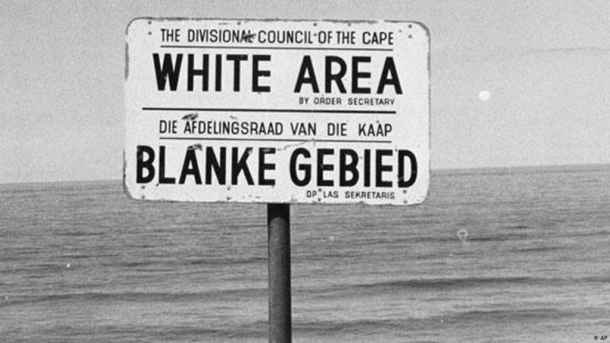

Iniciado no ano de 1948 na Africa do Sul, o Apartheid foi uma medida de segregação racial. Baseados na crença de que eram superiores, os brancos europeus instituiram até mesmo leis que impediam os negor a frequentarem locais publicos, a circular livremente, e não possuiam direito ao voto.
Os negros precisavam andar com cadernetas por determinação da Lei dos nativos, conhecida como Lei do passe, o documento deveria ser apresentado à polícia sempre que solicitado. Devido a segregação de espaços publicos, placas com a indicação “Somente europeus” eram colocadas para impedir o contato com negros.
A principal organização política de combate ao apartheid foi o Congresso Nacional Africano. Em 1960, durante manifestação pacífica, 69 pessoas foram mortas pelas polícia sul-africana. Tal episódio ficou conhecido como o Massacre de Sharpeville o que despertou uma insatisfação ainda maior da população não branca. Nelson Mandela fazia parte de uma resistência dentro do CNA, ele acabou assumindo o controle dessa organização. Os movimentos políticos anti-racistas foram postos na ilegalidade e em 1964 Mandela foi condenado à prisão perpétua. Mesmo condenado pela ONU e tendo o país foi retirado da Assembleia Geral, em nada mudaram a violência dentro do país. Em 1976, o chamado Levante de Soweto, uma manifestação pacífica foi repreendido violentamente pela polícia, levando à morte de dezenas ou centenas de manifestantes – há divergências sobre esse número.
Apesar de muito criticado dentro e fora do país, o Apartheid durou 46 anos. Essa longevidade pode ser explicada pelo interesse do capital internacional em investir na região, devido a mão de obra barata. Em 1990 Klerk anuncia a legalização dos partidos políticos banidos e liberta centenas de presos políticos, inclusive Nelson Mandela, que pode concorrer às eleições e vencedor, assume a presidência em 1994. Essas foram as primeiras eleições nas quais os negros puderam participar.